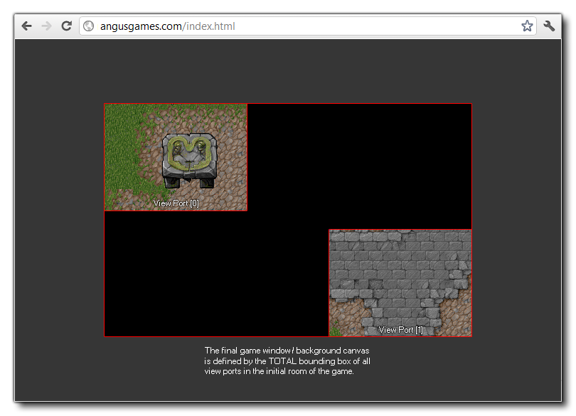
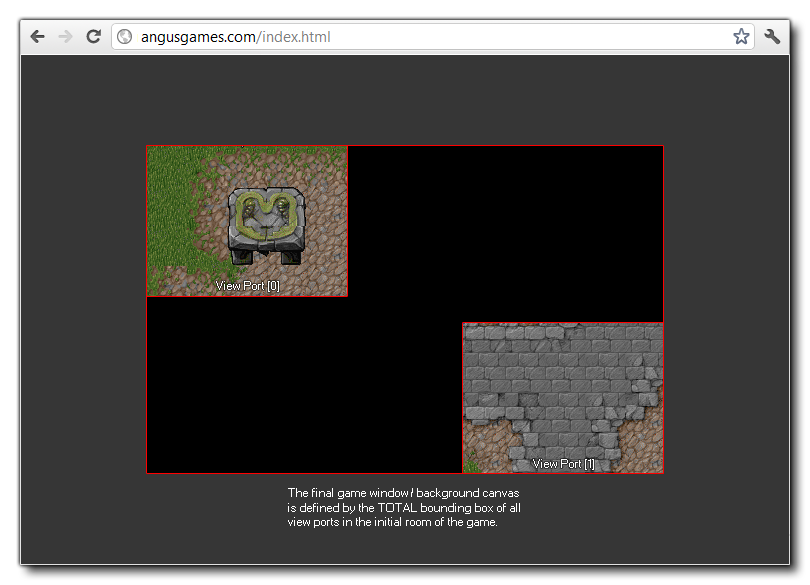

Wenn Sie nur einen View-Port haben, kann der x- oder y-Wert des Ports einige interessante Effekte haben, ist aber normalerweise nicht praktikabel (siehe Bild unten). Daher ist es besser, die x- und y-Position als (0,0) zu halten..

Mit diesem eingebauten Array können Sie die x-Position des gegebenen View-Ports abrufen oder festlegen. Der Ansichtsport ist der Bereich auf dem Bildschirm, in dem die Ansicht gezeichnet wird, und Sie können bis zu 8 gleichzeitig aktiv haben (das Array hat Werte von 0 bis einschließlich 7, um 8 Ports zu erhalten). Die Standardeinstellung für GameMaker Studio 2 ist, dass das Spielfenster (oder der Hintergrundbereich) die gleiche Größe wie der Raum hat. Wenn Sie jedoch Ansichtsports und Kameras aktivieren, ändert sich dieses Verhalten und die Gesamtgröße des Begrenzungsrahmens für alle Ansichtsports wird eingesetzt. Wenn Sie also zwei verschiedene Ansichts-Ports an zwei verschiedenen Positionen haben, definiert die Gesamtfläche, die sie abdecken, die Größe des Spielfensters. Das folgende Bild zeigt dies:

Wenn Sie nur einen View-Port haben, kann der x- oder y-Wert des Ports einige interessante Effekte haben, ist aber normalerweise nicht praktikabel (siehe Bild unten). Daher ist es besser, die x- und y-Position als (0,0) zu halten..
view_xport[0 .. 7];
Real
view_xport[0] = 0;
view_yport[0] = 0;
Der obige Code setzt die Position des Anzeigeanschlusses [0] auf die (0,0) Position (obere linke Ecke) des Displays zurück.